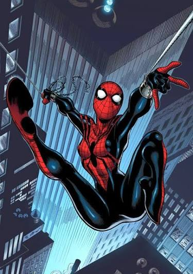

Spider-Girl (Tierra-982)

Nombre Real
May "Mayday" Parker
Primera Aparición
Apareció por primera vez en What If? (Vol. 2) #105 (febrero de 1998), creada por Tom DeFalco y Ron Frenz.
Lore / Historia
Es la hija de Peter Parker y Mary Jane Watson en un futuro alternativo (Universo MC2). Al desarrollar superpoderes arácnidos durante la adolescencia, decide vestir el traje modificado de su tío Ben Reilly y continuar con la causa heroica de su padre retirado.
Logro Importante
Se convirtió en el primer personaje femenino de Marvel en protagonizar de forma continua una serie de cómics en solitario por más de 100 números consecutuivos. En Spider-Verse sobrevive al sangriento ataque de Daemos protegiendo a su hermano bebé, Benjy.